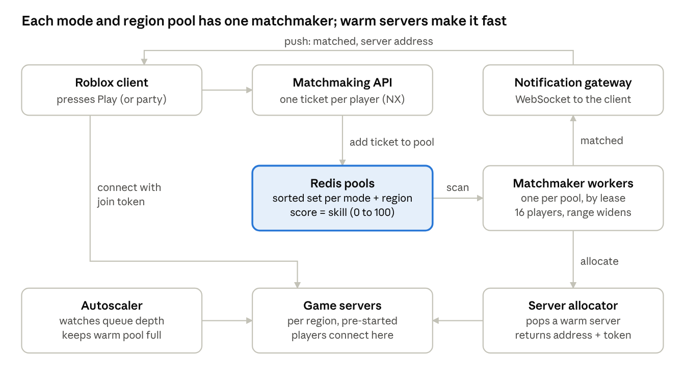

Understanding the problem
A player presses Play in a competitive Roblox experience. Matchmaking puts them in a game with others of similar skill, fills the game (assume 16 players per match), and starts it on a game server near them. The tension is between fairness (similar skill) and wait time: perfect matches mean long waits, so the rules must loosen the longer someone waits.
Functional requirements
Core:
A player (or a party) can join the queue for a game mode, and leave it.
The system groups players of similar skill (a rating from 0 to 100) into matches of 16.
The longer a player waits, the wider the skill range they can be matched with.
Each match gets a game server, and all 16 players are sent to it.
A player can be in only one queue at a time.
Below the line: how skill ratings are computed (Elo/TrueSkill), team balancing inside a match, anti-cheat, backfilling a match when someone leaves.
Non-functional requirements
Low wait: most matches form within ~30 seconds.
Scale: assume ~1M players in queues at peak, ~50K joins/s at peak (e.g. a popular game's event starts).
Correct: a player is never put in two matches at once.
Regional: players are matched with others in or near their region, for low latency.
Fault tolerant: if a matchmaker crashes, queued players aren't lost (at worst they wait a bit longer).
The set-up
Core entities
Ticket: one queue entry: player IDs (one, or a whole party), skill, region, game mode, enqueue time, status.
Match: 16 players, a game mode, a region, and the server assigned to it.
GameServer: a running instance with an address and free capacity.
API
POST /matchmaking/tickets { "mode": "ranked-16", "party": ["u_1", "u_2"] }
→ 202 { "ticket_id": "t_77", "status": "SEARCHING" } // 409 if a party member already has a ticket
DELETE /matchmaking/tickets/{ticket_id} // leave the queue
GET /matchmaking/tickets/{ticket_id} // SEARCHING | MATCHED (+ server address) | EXPIREDThe server tells the client when it's matched, through a WebSocket or push channel the Roblox client already holds open. GET is the fallback when the push is missed. Skill and region come from the server side (the player's profile and their IP or latency tests), never from the client, or players would lie to get easier matches.
High-level design
1. Join and leave the queue (one queue per player)
A Matchmaking API service creates a ticket. To enforce "one queue at a time", it first claims each party member in Redis:
SET player:ticket:{user_id} t_77 NX EX 600 # NX: only if not already setIf any member's SET NX fails, they're already queued: release the members you claimed and return 409. Leaving deletes the ticket and these keys. The 10-minute TTL cleans up after crashed clients.
2. Group by skill into matches of 16
Tickets go into pools keyed by game mode and region: queue:{mode}:{region}, a Redis sorted set with score = skill. A Matchmaker worker owns each pool (one worker per pool, assigned by a lease, so two workers never match the same players).
Every ~1 second, the worker scans its pool in skill order and forms matches: slide a window along the sorted players and take any 16 whose skill spread fits within the allowed range. Parties count as one unit with their average skill and their size. Matched tickets are removed from the sorted set atomically (a Lua script, or ZREM guarded by checking the ticket status).
3. Widen the range as players wait
Each ticket's allowed spread grows with its wait: e.g. ±3 skill points at first, +2 more every 10 seconds, capped at ±20. A group of 16 is valid if every member's own allowed range covers the whole group. After ~60 seconds, also allow neighboring regions (with a latency cap). Say the rule out loud and that the numbers are tunable per game.
4. Allocate a server and send players there
The matchmaker writes the match and asks a Server allocator for a game server in that region. The allocator keeps a pool of warm, pre-started servers per region (tracked in Redis: servers:ready:{region}), so allocation is popping one from a list, not booting a machine. It hands back the server's address and a join token. The matchmaker marks the tickets MATCHED, and the notification gateway pushes the address to each player's client, which connects to the server.
If a player doesn't show up within ~20 seconds, the server reports it; the others continue, or the match is returned to the queue with priority, depending on the game's rules.
Potential deep dives
1. Where does the matching run, and how does it scale?
Bad solution: one global matchmaker. Every ticket in one in-memory list. Simple, but it's a single point of failure, and at 1M queued players one process can't scan fast enough.
Good solution: partition by (mode, region). Each pool is independent, so give each its own worker. Pools are small enough (thousands to tens of thousands of players) for one worker to scan every second.
Great solution: partition, plus split the giant pools by skill band. A hugely popular mode in one region may have 200K players queued. Split it into overlapping skill bands (0–30, 25–55, 50–80, 75–100), each owned by its own worker. The overlap lets players near a boundary match across it. Pools are assigned to workers by lease (e.g. in etcd or Redis), so if a worker dies its pools move to another within seconds. The state lives in Redis, not in the worker, so nothing is lost.
2. Never put a player in two matches
Two layers:
One ticket per player:
SET player:ticket:{user_id} … NXat join.One owner per pool: only the worker holding a pool's lease can form matches from it.
Plus, when forming a match, flip each ticket's status from SEARCHING to MATCHED with a conditional update (in a Lua script, so it's atomic). If any ticket was cancelled in the meantime, drop the match and put the others back. That handles the race where a player leaves the queue at the exact moment they're matched.
3. Fairness vs wait time
Bad: fixed skill range forever. Top and bottom players wait for minutes.
Good: widen the range linearly with wait time, as in the high-level design.
Great: widen based on pool density: if there are plenty of nearby players, keep the range tight; if the pool is thin (3 a.m., top-rated players), widen faster. Track the actual distribution: median wait and median skill spread per mode and region, and tune toward targets (e.g. 90% matched within 30 s). Prefer matching the longest-waiting tickets first so nobody starves.
4. Server allocation under a spike
An event starts and 50K players press Play at once.
Keep a warm pool of ready servers per region, sized from recent demand plus headroom.
An autoscaler watches the warm pool and the queue depth and starts new servers (containers or VMs) before the pool runs out. Starting a server takes tens of seconds; that's why the warm pool exists.
If the pool empties, matches wait in a short "awaiting server" state rather than failing, and the client shows "finding a server".
5. Regions and latency
Assign the player's region from latency tests to nearby data centers, not just their IP's country. After a timeout, let a ticket match in a neighboring region if the measured latency is under a cap (e.g. 120 ms). Parties use the region that's best for the group (minimize the worst member's latency).
Final design

The API claims each player with SET NX and adds the ticket to its mode-and-region pool, a Redis sorted set by skill. One matchmaker per pool (by lease) forms groups of 16, widening the skill range with wait time, and asks the allocator for a warm server. The gateway pushes the server address to every player, who connects with a join token; the autoscaler keeps the warm pool topped up.
What's expected at each level
Mid-level. A queue, a worker that groups players by skill, and a server assignment. May miss the double-match race and wait-time widening.
Senior. Pools by mode and region in Redis sorted sets, one owner per pool via a lease, SET NX for one queue per player, wait-time widening stated as a rule, a warm server pool with autoscaling, and a push channel for results. Handles the leave-while-matching race.
Staff+. Splits giant pools by overlapping skill bands, tunes widening by pool density with measurable targets (p90 wait, skill spread), plans capacity for event spikes, and discusses cross-region trade-offs and party fairness.
Return To Homepage